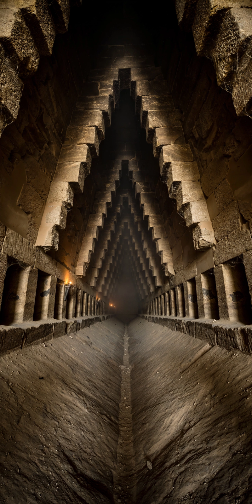

Grand Gallery, Great Pyramid

| Grand Gallery | |
| Location | Interior of the Great Pyramid of Giza, Egypt |
|---|---|
| Length | about 47 m (154 ft) |
| Height | about 8.6 m (28 ft) |
| Slope | about 26° |
| Built | reign of Khufu, c. 2580–2560 BC |
The Grand Gallery is a large ascending passage inside the Great Pyramid of Giza, the tomb of the Fourth Dynasty pharaoh Khufu. It continues the line of the Ascending Passage upward at the same angle of roughly 26 degrees to the King's Chamber, but at a far grander scale, and is regarded as one of the masterpieces of Old Kingdom stone construction.
- Description
- Construction
- Theories of function
Description
The gallery is about 47 metres (154 ft) long and 8.6 metres (28 ft) high. Its walls rise first vertically, then step inward in seven corbelled courses of smooth limestone until the ceiling slabs span a gap only about a metre wide. A central channel or ramp, about 60 cm deep and flanked by two stone benches (ramps), runs up the floor; the side ramps contain a series of paired slots or notches whose purpose has been much debated. At the top, a high step leads to the horizontal passage into the King's Chamber antechamber.
At the lower end of the gallery the roof opens into the so-called Great Void's region is not here — rather, at the foot of the Grand Gallery the passageway gives access to the horizontal corridor leading to the Queen's Chamber, and a rough vertical shaft (the "Well Shaft") descends through the masonry to the Descending Passage.
Construction
The masonry is of fine local limestone, dressed with remarkable precision. One long-standing theory holds that the gallery served as a counterweight run: wooden sledges bearing granite plugs could have been stored on the gallery floor and released to slide down and seal the Ascending Passage after the burial — the three granite plugs still in the Ascending Passage are consistent with this scheme.
Theories of function
Beyond the plug-storage theory, proposals have included a ceremonial or ritual function, an astronomical observing slit, and various structural explanations connected with the relief of stress over the King's Chamber. Muon-tomography surveys by the ScanPyramids project have detected a large void above the Grand Gallery — the "Big Void" announced in 2017 — suggesting further unknown spaces in its vicinity.
See also: Great Pyramid of Giza; Khufu; Egyptian pyramids; ScanPyramids.